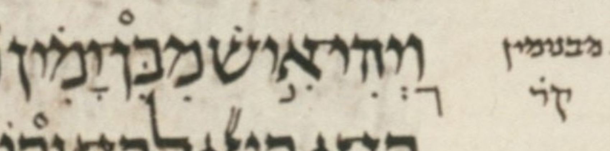

| bcv (tanach.us) | 1s9:1 |
| MPK | מִבִּן־יָמִ֗ין |
| qere | מִבִּנְיָמִ֗ין |
| at issue | נְ |
| at issue English | added a sheva to nun |
| existing UCP | 2024.04.01/2024.01.14-1 |
| folio col line | 154A 2 4/5 |
The MPK’s ן in מבן does not carry a sheva for the qere’s נ, perhaps because that would be illegal.
Also, understandably, the maqaf disappears from the MPK when forming the implied qere. It is unclear why the maqaf is supplied in the first place. Perhaps it is supplied because without it, מִבִּן would be illegal: a word without an accent.
Dotan notes that strictly speaking, the implied qere is מִבִּניָמִ֗ין, which leaves the נ unexpectedly free of a sheva.